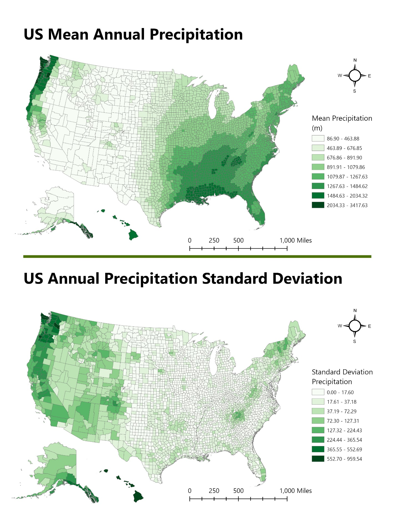

GIS Coursework / GIS II / US Precipitation Analysis
US Precipitation Analysis

Overview
Compared mean and standard deviation of annual precipitation across U.S. counties, with separate inset maps for Alaska and Hawaii to avoid projection distortion.
Process
Used the Zonal Statistics tool to calculate average and standard deviation precipitation per county, then joined the results back to county boundaries by FIPS code.